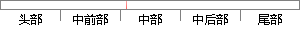

0时代的产物，早期网站主要内容都是静态，以图片和文字为主，用户使用网站的行为也以浏览为主。
片段位置图

相似结果|
相似片段 1：分来创建。2.3 前端开发Web 前端开发是从网页制作演变而来的。网页制作是 Web1.0 时代的产物，那时网站的主要内容都是静态的，用户使用网站的行为也以浏览为主。2005年后，互联网进入
相似片段 2：的时代特征。在互联网的演化进程中，网页制作是Web1．0时代的产物，那时网站的主要内容都是静态的，用户使用网站的行为以浏览为主，当时网页制作的主要技术是网页制作三剑客——DreamWeaver
相似片段 3：，网页制作是Web1．O时代的产物，那时网站的主要内容都是静态的，用户使用网站的行为也以浏览为主。2005年以后，互联网进入Web2．0时代，网页上软件化的交互形式为用户提供了更好的使用体验，这些都是
|
※ 片段修改建议 ※
近似词参考：- 时代：时期 期间
- 产物：产品
- 早期：初期
- 文字：笔墨
- 使用：利用
- 行为：行动 举动
- 浏览：阅读 欣赏 涉猎
系统自动生成语句：0时期的产品，初期网站主要内容都是静态，以图片和笔墨为主，用户利用网站的行动也以阅读为主。
注：本片段修改建议为系统自动生成，仅供参考。